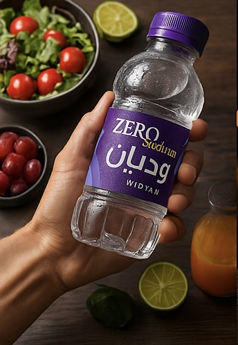

ولذلك أحضرنا مياه وديان الخاليه من الصوديوم من الطبيعة وإليك مباشرة

للمتدربين
قبل ذهابك للصالة الرياضية تأكد من وجود مياه وديان الخالية من الصوديوم في حقيبتك لكي تؤدي تمارينك وأنت في قمة النشاط والحماس وترفع من قدرة تحملك للتمارين
لصحة أفضل
لكي تعيش دائماً بصحة جيدة، يجب أن تواظب على استعمال مياه الشرب الطبيعية بدلاً من المشروبات الأخرى المليئة بالسكر والسعرات الحرارية وأنسب مياه للصحة الجيدة مياه وديان الخالية من الصوديوم.
لبناء الأجسام
مياه وديان الخالية من الصوديوم تلعب دوراً هاماً في بناء جسم رياضي سليم وصحي وهي صديق كل لاعب كمال أجسام
للرجيم
يقولون "اختار الصديق قبل الطريق" مياه وديان الخالية من الصوديوم أفضل صديق لك في طريق الرجيم للحصول على جسم متناسق وصحي.
للأطفال
أطفالنا لابد أن يتعلموا عادة مهمة جداً وهي شرب المياه وخاصة الخاليه من الصوديوم
لضغط الدم
يعتبر مقدار الصوديوم الموجود في الماء ذو أهمية للأشخاص الذين يعانون من ارتفاع ضغط الدم
 مياه وديان
مياه وديان